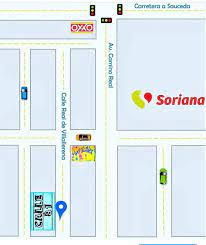

Precios
- Modelo Verde 99$
- Modelo Azul 99$
- Modelo Rojo 99$


¡Hola! Bienvenido a mi página web. En un mundo en constante evolución, donde la tecnología y la moda convergen, nace Eter Ring, una empresa que ha llegado para revolucionar el mundo de la joyería con su fusión única de diseño, tecnología y calidad. Desde su humilde inicio, Eter Ring se ha propuesto brillar con luz propia en la industria de la joyería.
En el corazón de Éter Ring, la excelencia en diseño es un compromiso inquebrantable. Nuestra empresa se enorgullece de ofrecer una gama de anillos de acero inoxidable con luces LED que combinan una estética elegante con una tecnología innovadora y una calidad impecable. Aquí, te llevamos a un viaje a través de nuestros diseños de alta calidad que marcan la diferencia.
Fusión de Tecnología y Estilo
En Éter Ring, creemos que la tecnología y el estilo pueden coexistir de manera armoniosa. Nuestra firma distintiva es la integración de luces LED en nuestros anillos de acero inoxidable, creando una fusión de tecnología moderna y diseño elegante. Cada anillo es una obra de arte que se enciende con una luz suave y cautivadora, lo que lo convierte en una declaración de estilo única y sofisticada.
Variedad de Estilos
Nuestros diseñadores se inspiran en una variedad de influencias, desde lo minimalista y contemporáneo hasta lo clásico y atemporal. Nuestra colección abarca desde anillos de estilo simple y delicado hasta diseños más elaborados y detallados. Creemos que la joyería debe ser una extensión de la personalidad de quien la lleva, y es por eso que ofrecemos una amplia gama de estilos para satisfacer los gustos de todos.
Personalización a Tu Medida
En Éter Ring, comprendemos que cada individuo es único y especial. Por ello, ofrecemos opciones de personalización que te permiten crear el anillo de tus sueños. Puedes elegir desde el tipo de luz LED que prefieres hasta grabados personalizados que hacen que cada anillo sea una pieza única y significativa.
Calidad Inigualable
Nuestro compromiso con la calidad es innegociable. Cada anillo que sale de nuestro taller es una obra maestra, confeccionada con acero inoxidable de alta calidad. Este material no solo es duradero y resistente a la corrosión, sino que también garantiza que tu anillo conserve su belleza y brillo con el tiempo.
Únete a la Revolución de Estilo y Tecnología
Si buscas una joyería que combine diseño de alta calidad, tecnología de vanguardia y un compromiso con la singularidad, Éter Ring es tu elección. Únete a nosotros en esta emocionante revolución de estilo y tecnología, donde la elegancia se encuentra con la innovación para iluminar tu mundo.

Fue creado a partir de estudio en el mercado para poder crear algo inovador algo que era unico y que tuviera ese toque moderno y cool, otro paso importante fue el como lo vamos a implementar y el como hacerlo,conseguir los distribuidores,ejecutar el diseño. Y todo esto fue el proceso del como fue creado
La historia de Eter Ring es una narrativa cautivadora de pasión, visión y determinación. Esta empresa, que ha surgido como una innovadora en la industria de la joyería, ha sabido combinar la belleza del acero inoxidable con la luz de los LEDs, creando anillos únicos que iluminan las vidas de quienes los llevan. Aquí, te contamos cómo se forjó esta empresa y cómo ha llegado a ser un faro de creatividad y calidad.
Ponte en contacto con nosotros.
Aqui te mostramos un croquis
Ponte en contacto con nosotros.
Nos encontramos en todas las redes como Eter Ring.